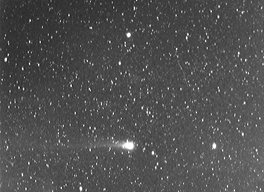
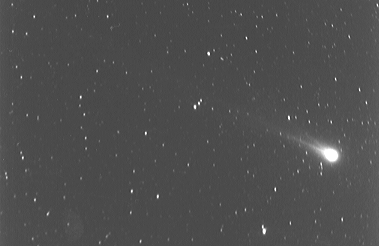
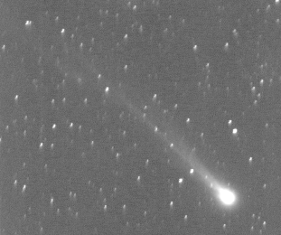

The third image was scanned using a Logitech Scanman Colour hand-held scanner at 100 DPI, also from a Kodak Tri-X pan 400 black-and-white print. This was Gamma adjusted and cropped using WinGIF v1.4.
The photographs were taken by piggy-backing a Pentax K1000 camera on a polar-aligned, clock-driven 4.5" Newtonian reflector. Since the comet moved appreciably against the background stars during the course of a single exposure (ranging from 5 to 35 minutes), guiding the telescope on the comet resulted in some star trailing.
The shots were taken by David Benn from two private properties in mid to northern Tasmania. A 70mm lens at f/3.5 was used for all exposures. Distances below are given in Astronomical Units, where 1 AU = 149,597,870 km.


